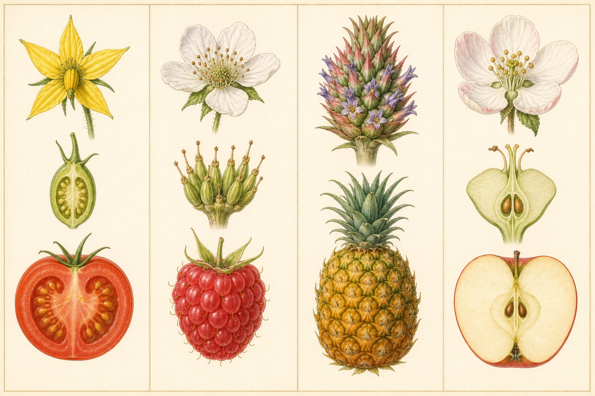
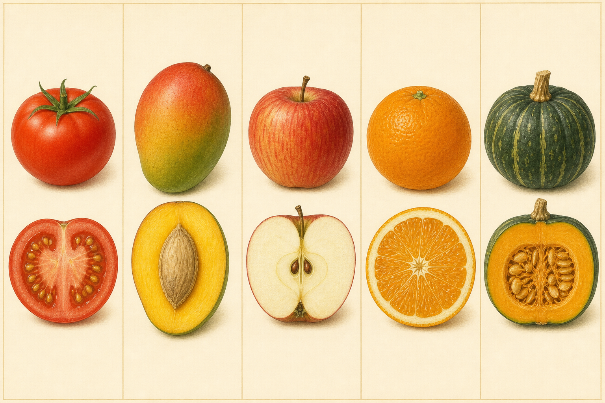
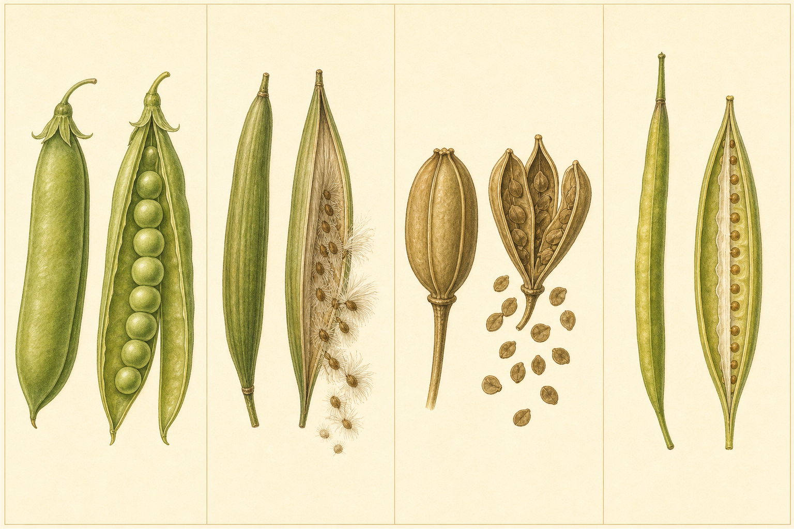
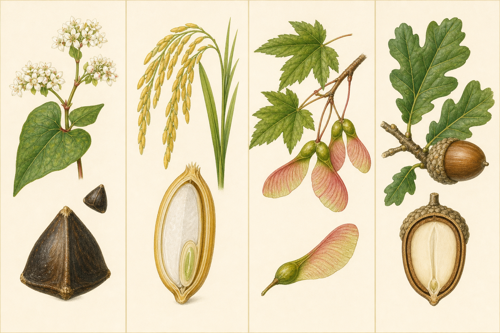
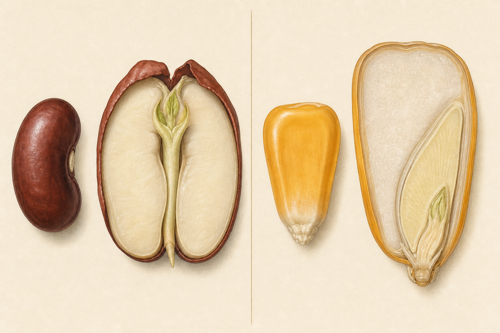
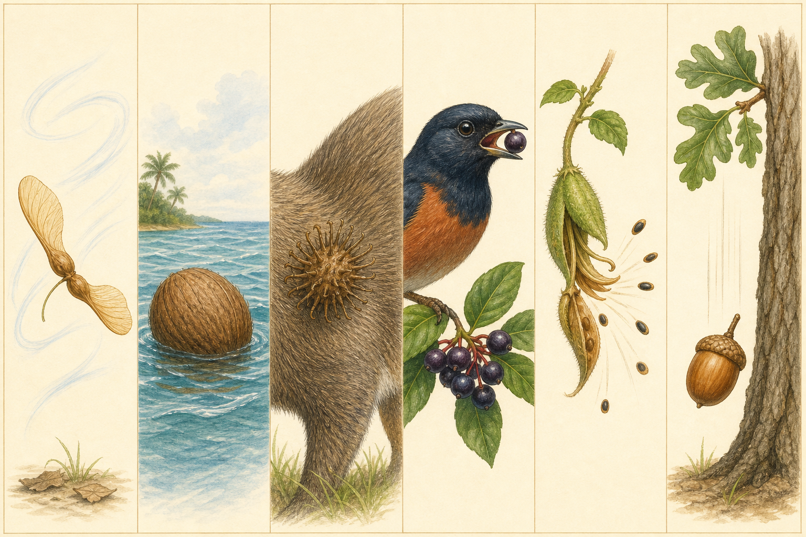

單果
一朵花的一個子房發育而成。番茄、芒果、豆莢與蒴果都可屬單果，之後還能再依果皮質地分類。
FRUIT & SEED DETECTIVE
地上的「種子」常常還包在果實裡。先分清形成來源、果皮質地與開裂方式，再觀察種子構造和散播線索；名稱是結論，證據才是起點。

FROM FLOWER TO FRUIT
被子植物完成受精後，胚珠發育成種子；子房通常發育成果實，果皮可保護種子並幫助散播。有些果實還包含花托等其他花部。
AXIS Ⅰ · ORIGIN
單果、聚合果、複果與附果描述「形成來源」。這條軸和肉質／乾果不同，不能把兩組名詞排成同一層級。

一朵花的一個子房發育而成。番茄、芒果、豆莢與蒴果都可屬單果，之後還能再依果皮質地分類。
一朵花有許多離生心皮，每個小心皮各成一個小果，聚在同一花托上；草莓與覆盆子常用來說明。
整個花序的多朵花共同形成一個果實狀構造，例如鳳梨、桑葚與榕果；觀察時要找原本花序留下的界線。
可食或顯眼部分不只來自子房，還有花托或花被等其他花部參與，例如蘋果與梨。附果也可能同時是單果或聚合果。
AXIS Ⅱ · TEXTURE & OPENING
果皮常可分外果皮、中果皮與內果皮。肉質果成熟時果皮多含水；乾果成熟時果皮較乾，再分為開裂果與不開裂果。

果皮大部分肉質，種子埋在果肉中；例：番茄、葡萄、芭樂。植物學分類不等同料理習慣。
內果皮硬化成「核」，通常包住一粒種子；例：芒果、桃、樟樹核果。
花托等組織成為主要肉質部分，中央具有紙質或較硬的果心；例：蘋果、梨。
外果皮具油胞，中果皮白色，內部囊瓣含汁；例：橘子、檸檬、柚子。
由下位子房形成，外果皮較厚，內部多汁且種子多；例：南瓜、胡瓜、西瓜。

由一心皮形成，成熟常沿腹縫與背縫兩邊裂開；例：豌豆、鳳凰木、阿勃勒。
由一心皮形成，通常只沿一條縫裂開；例：黑板樹與緬梔常見成對蓇葖果。
由合生心皮形成，開法很多：裂瓣、孔裂或蓋裂等；例：臺灣欒樹、木棉、車前草。
兩片果瓣脫落後，種子仍連在中央隔膜上；十字花科常見，短而寬者可稱短角果。

通常一粒種子，果皮薄且不與種皮緊密癒合；向日葵的「瓜子殼」其實是果皮。
果皮與種皮緊密癒合，是禾本科的典型果實；稻米、玉米與草地禾草的「種子」常是整個穎果。
果皮伸展成薄翅，增加受風面積；例：楓香以外的槭樹、光蠟樹等各有不同翅果形態。
果皮堅硬，通常包住一粒種子且不開裂；殼斗科橡實外面另有殼斗承托或包圍。
INSIDE A SEED
典型種子包含種皮、胚與養分。胚可見胚芽、胚軸和胚根；養分可能主要存在子葉或胚乳。不同植物的比例與可見程度不一樣。

最外層保護構造，可減少受傷與水分散失；厚薄、光滑或粗糙程度因物種而異。
未來幼苗的雛形，包含胚芽、胚軸與胚根；發芽時胚根通常先伸出，開始吸水固定。
胚的一部分，可儲存或吸收養分。雙子葉植物通常有兩片，單子葉植物通常一片。
提供胚發育所需的能量與材料；玉米穎果中胚乳明顯，成熟豆種子的胚乳多已被子葉吸收。
DISPERSAL CLUES
散播方式要由構造、環境與實際觀察一起推論；「有翅」支持風散，卻不表示每一顆都能飛很遠。

輕、薄、有翅或有毛，可延長滯空時間；例：翅果、黑板樹種毛、木棉棉毛。
外層防水或有浮力，可隨水流移動；椰子是典型例，校園排水溝也可能搬運小果。
倒鉤、刺毛或黏性表面附著毛皮、鞋襪；大花咸豐草要避免刻意帶離校園。
顏色與果肉吸引動物，種子被吐出或隨排遺離開；鳥能吃不代表人能吃。
果皮乾燥產生張力，成熟後突然裂開；由教師準備安全材料並保持眼睛距離。
果實成熟後直接落下，之後可能滾動或再被動物搬走；大顆堅果常先靠重力離株。
CAMPUS PROTOCOL
優先原位觀察。真的需要帶回課堂時，只取教師確認可接觸、自然掉落且數量充足的少量乾燥材料。
暫定植物名：＿＿＿＿＿＿ 日期：＿＿＿＿＿＿ 校園位置：＿＿＿＿＿＿ 材料來源：□ 原位觀察 □ 自然落地 □ 教師提供
| 形成來源證據 | 果皮質地／開裂 | 種子數與構造 | 散播構造 | 我的暫定分類與疑問 |
|---|---|---|---|---|
| □ 單果 □ 聚合果 □ 複果 □ 附果／待查 | □ 肉質 □ 乾燥開裂 □ 乾燥不開裂 □ 待查 |
RELIABLE SOURCES
文字依據農業部「種子世界館」、臺大科學教育發展中心與 OpenStax Biology 的果實、種子章節整理。分類用於國小觀察入門；實物若變形、破損或缺少花期證據，應標「待查」，不要只靠一顆落果定名。